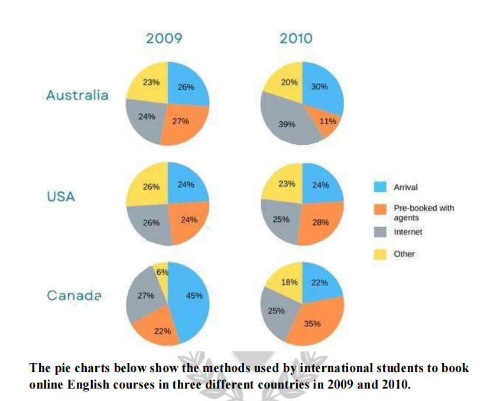

Article
Read the article, then confirm below to continue.
AI Is Already Part of Your Life
How smart technology already shapes what you watch, buy, and unlock — and why understanding it matters.
📄 Open articleComprehension & vocab
Questions on the article you just read, plus True/False statements.
Comprehension
1. According to the article, what does AI use to process data and find patterns?
2. According to the article, how does a music app know what song to play that you'll love?
3. According to the article, how does facial recognition on a phone work?
4. According to the article, what happens to an AI system if the data it is trained on contains bias?
5. According to the article, what is one way AI is used in schools?
6. What does the article suggest is the key to using AI wisely?
True or False
1. AI is only used in science fiction films, not in real life.
2. An algorithm is a set of rules a computer follows to make decisions.
3. The more data an AI processes, the better it usually gets.
4. AI can only be used in entertainment, like music and video apps.
5. AI systems can sometimes be biased if the data they use is unbalanced.
6. You need to be a computer scientist to use AI in a thoughtful way.
Reading Practice
Open the test in a new tab, complete it, then come back here.
Full Reading Test
40 questions across multiple passages. Complete whichever section your teacher assigns.
📖 Open reading passageWriting Task 1: the article
Background reading on how students book courses — study the highlighted language before you write.
■ subject synonyms ■ numerical language ■ useful Task 1 chunks
Shifting Consumer Procurement Models in Cross-Border Educational Services
The mechanisms through which international consumers acquire educational programs have undergone structural shifts driven by technological adoption, agency reliance, and localized market behaviour. Examining multi-region enrolment avenues over consecutive operational periods reveals clear movements away from traditional point-of-sale registrations toward pre-arranged digital and agency-driven bookings.
Booking preferences diverge significantly based on national market maturity, digital infrastructure, and regulatory frameworks governing educational intermediaries. Web-based self-service platforms have steadily consolidated market share in major study destinations — in mature markets, direct online enrolment has transitioned from a secondary option to a primary driver of student registration, displacing legacy on-site payment models.
Educational agencies and local placement consultants continue to play a pivotal role, particularly in regions where complex visa requirements or language barriers necessitate guided onboarding. However, reliance on these proxies fluctuates depending on the accessibility of direct online channels. In-person bookings made upon physical arrival have contracted in regions expanding their digital pre-arrival pipelines, while markets with strong walk-in infrastructure maintain a baseline of late-stage registrations. Miscellaneous booking methods — including institutional partnerships and corporate sponsorships — remain a stable secondary source across all observed territories.
Task 1 report
Mini exam block — write your response with the stopwatch running.
The pie charts below show the methods used by international students to book online English courses in three different countries in 2009 and 2010. Summarise the information by selecting and reporting the main features, and make comparisons where relevant. Write at least 150 words.

Sample answer
Model response, with useful comparison language marked.
The six pie charts illustrate the proportions of international students who used different methods — on arrival, pre-booking with agents, and other — to register for online English courses in Australia, the USA, and Canada in 2009 and 2010.
Overall, while the USA exhibited minimal variations in preferences between the two years, Australia and Canada experienced notable shifts, where online bookings and agent pre-bookings became the most preferred methods, respectively.
In Australia, booking preferences shifted markedly between 2009 and 2010. Internet bookings rose from 24% to 39%, an increase of 15 percentage points, making it the most preferred method in 2010. In contrast, the figure for pre-booking through agents more than halved to just 11%, the lowest share. Meanwhile, on-arrival bookings edged up to 30%, while 20% of registrations were completed by other unspecified methods.
However, in the USA, the proportions remained largely balanced across both years. While pre-booking through agents rose to 28%, becoming the most preferred option in 2010, internet and other unspecified methods declined slightly to 25% and 23%, respectively. On-arrival bookings remained stable at 24%.
Canada also experienced notable shifts, with on-arrival bookings falling from 45% to 22%. By contrast, agent pre-bookings became increasingly popular, rising modestly to 35%, making it the leading option by 2010. Internet-based bookings experienced a slight decline to 25%, while the use of other unspecified methods tripled to 18%, still the least preferred option in this country.
Speaking Part 2 & 3
Choose a topic set below. Each has a Part 2 cue card and 4 Part 3 follow-up questions. You only get one attempt per question, so make sure you're ready before you start recording.
Video & comprehension
Watch, then answer the questions below.
1. According to the video, what percentage of college students procrastinate to some degree?
2. According to the video, what is procrastination?
3. According to the video, procrastination is the result of the body trying to do what?
4. Which part of the brain does the video say the fear response linked to procrastination begins in?
5. According to the video, chronic procrastinators are often:
6. What percentage of college students consider themselves procrastinators, according to the video?
7. What does the video say procrastination has statistical correlations to?
8. Which brain system does the video say the amygdala is part of?
9. According to the video, tasks that people are most likely to procrastinate on tend to evoke which feelings?
10. What is the "cycle of procrastination" described at the start of the video?
Day 8 complete! 🎉
All 8 tasks done. Come back tomorrow for the next day.